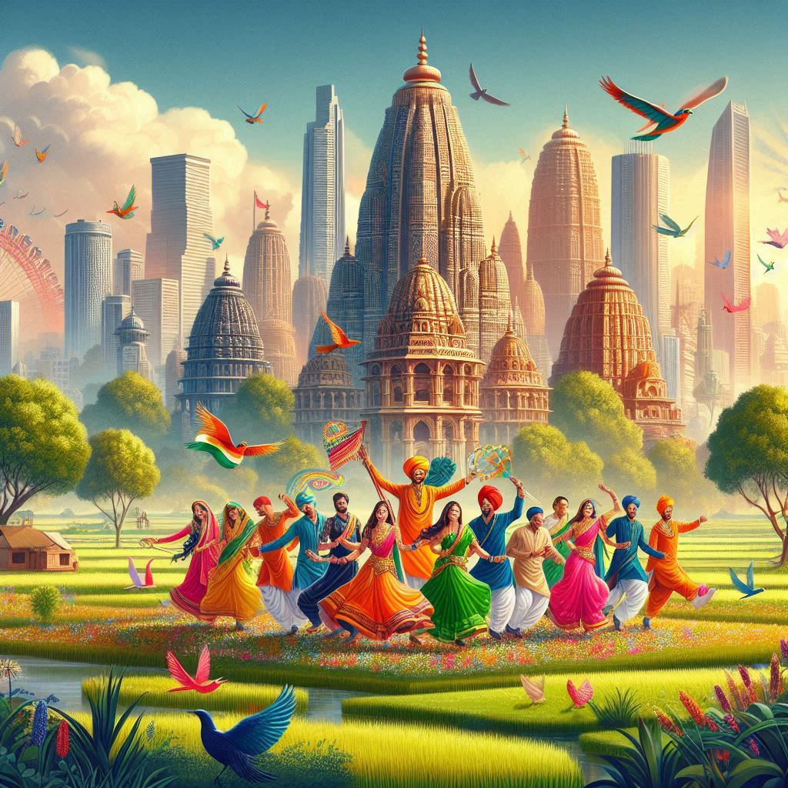
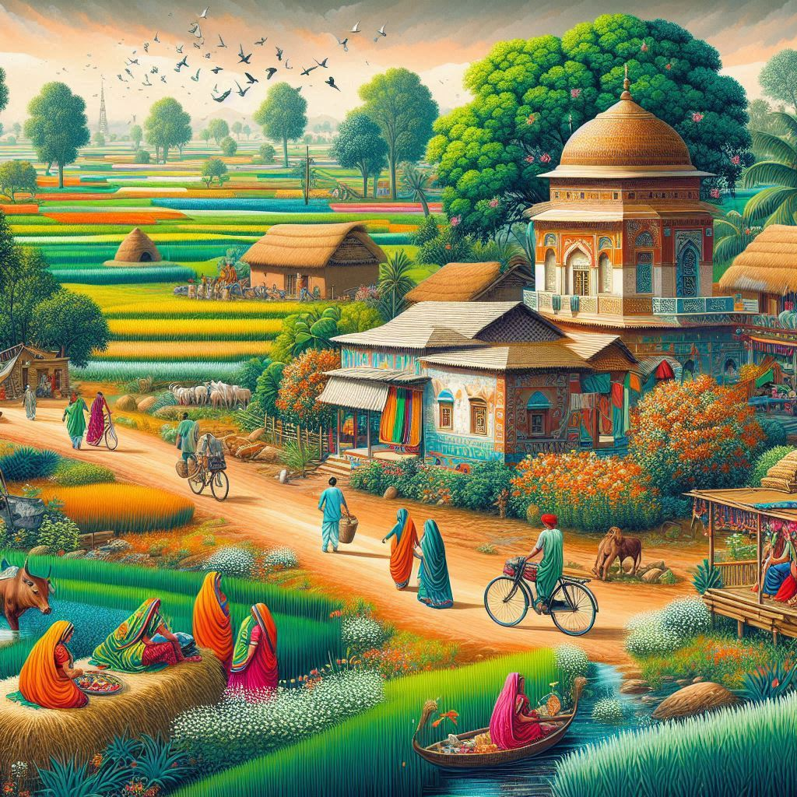

Haryana, located in the northern part of India, is a state known for its rich cultural heritage, historical landmarks, and natural beauty. It offers a variety of attractions for tourists, from ancient temples and forts to lush green gardens and wildlife sanctuaries.
1. Historical and Cultural Sites
- Kurukshetra: Famously known as the site of the Battle of Kurukshetra in the Hindu epic Mahabharata. Major attractions include the Brahma Sarovar, Jyotisar, Sannihit Sarovar, and the Krishna Museum.
- Pinjore Gardens: Known for its Mughal-style gardens, Pinjore is located near Chandigarh and offers a peaceful escape, including the Haryana Tourism Complex.
- Fatehabad: An ancient fort built during the Mughal era. The city offers insights into Haryana’s rural and agricultural lifestyle.
- Bhima Devi Temple: Located in Pinjore, this ancient temple complex has intricate carvings that highlight Haryana’s rich architectural heritage.
2. Religious Sites
- Shahbad Markanda: Known for its temples and the sacred Markanda River. The Shahbad Markanda Temple is dedicated to Lord Shiva.
- The Sheetala Mata Temple: Located in Gurugram, this temple is dedicated to the goddess Sheetala Mata and attracts many devotees.
- Mata Mansa Devi Temple: Located in Panchkula, this revered temple is dedicated to Goddess Mansa Devi.
3. Natural Attractions
- Sultanpur Bird Sanctuary: Near Gurugram, this sanctuary is a paradise for bird watchers, home to numerous migratory and resident birds.
- Kalesar National Park: Located in the Yamunanagar district, it offers a sanctuary for various flora and fauna, including leopards and deer.
- Surajkund: Famous for the Surajkund Mela, an international crafts fair showcasing crafts, cuisines, and culture.
4. Adventure and Recreational Spots
- Yadavindra Gardens: Located in Karnal, ideal for family outings with its blend of architectural beauty and nature.
- Badkhal Lake: Near Faridabad, it offers picturesque views and boating activities during the monsoon.
- Adventure Parks: Haryana has several parks like Oyster's Water Park in Gurugram and Fun N Food Village in Delhi NCR.
5. Wildlife and Eco-Tourism
- Sultanpur National Park: Home to over 250 bird species, especially popular during the winter months.
- Kalesar National Park: Situated in the Shivalik hills, ideal for trekking and exploring its rich flora and fauna.


6. Modern Urban Attractions
- Gurugram (Gurgaon): Known for modern architecture, shopping malls, and entertainment hubs like Kingdom of Dreams.
- Ambience Mall: Located in Gurugram, one of India’s largest shopping malls.
7. Food and Culture
- Traditional Haryanvi Cuisine: Enjoy regional delicacies like bajra khichdi and kadhi pakora.
- Cultural Events: Festivals like Teej, Baisakhi, and Makar Sankranti attract tourists with traditional music and performances.
8. Adventure Sports
- Paragliding: Available in locations like Narnaul and Karnal.
- Boating: Offered at Badkhal Lake and other water bodies.
Conclusion
Haryana offers a mix of cultural heritage, historical landmarks, religious sites, nature reserves, and modern amenities. It caters to all travelers, offering a memorable travel experience with hospitality and diverse attractions.